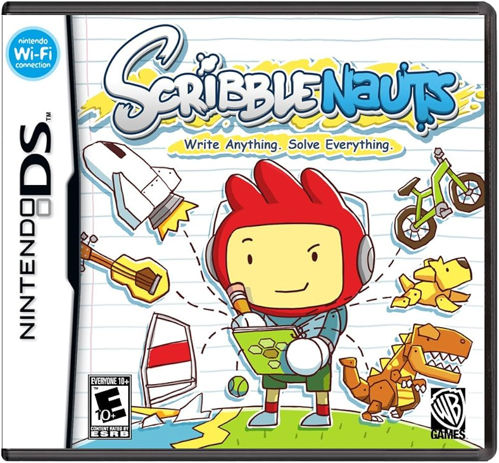
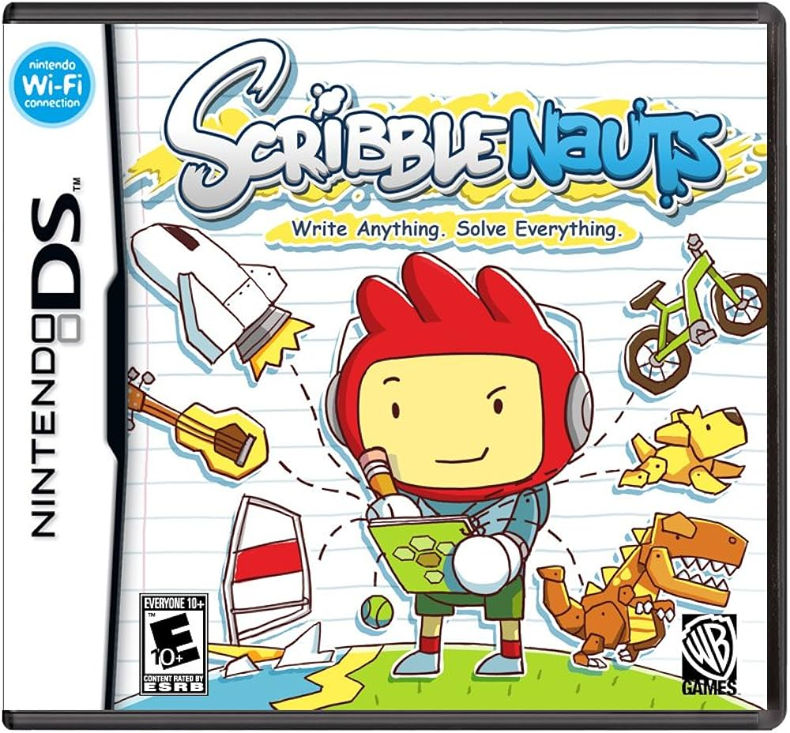

The Nintendo 3DS Family allows you to "Dive straight into Nintendo franchises such as The Legend of Zelda, Mario, Animal Crossing and much more! Nintendo 3DS family systems are also backwards compatible, so you can play the entire library of Nintendo DS games too!"
The Nintendo 2DS is a handheld game console produced by Nintendo. Announced in August 2013, the device was released in North America, Europe and Australia on October 12, 2013. The Nintendo 2DS is an entry-level version of the Nintendo 3DS which maintains otherwise identical hardware, similar functionality, and compatibility with software designed for the Nintendo DS and 3DS. However, the 2DS is differentiated by a new slate form factor rather than the clamshell design used by its precursors and by lacking the Nintendo 3DS's signature autostereoscopic 3D display.


 
